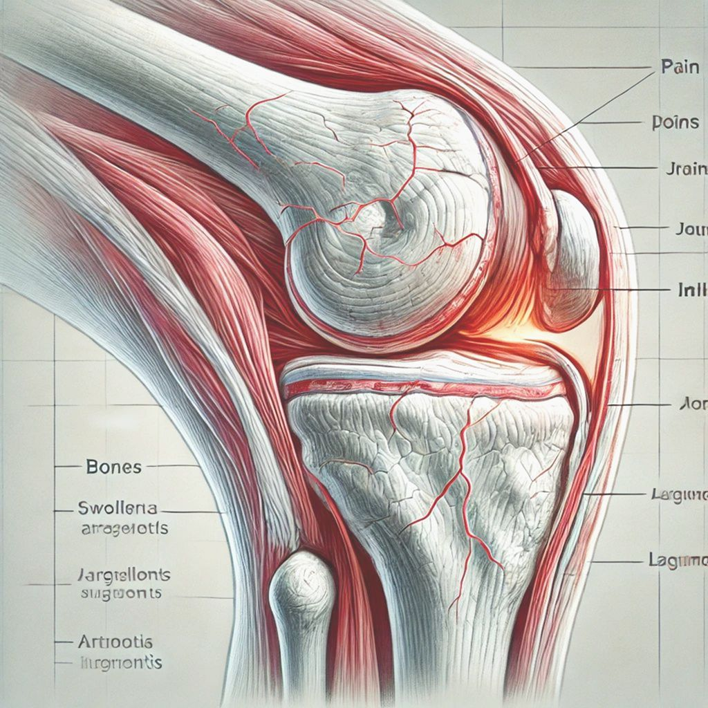

Introducción a la Salud Articular

Las articulaciones son fundamentales para nuestra movilidad y calidad de vida. En esta guía completa, exploraremos estrategias integrales para mantener tus articulaciones fuertes y saludables.
Anatomía de las Articulaciones

Comprender la estructura de las articulaciones es el primer paso para su cuidado efectivo. Las articulaciones conectan huesos, permitiéndonos movernos con flexibilidad.
Nutrición para Articulaciones Saludables
Una dieta balanceada rica en nutrientes específicos puede fortalecer y proteger tus articulaciones. Algunos alimentos son especialmente beneficiosos.
Ejercicios para Fortalecer Articulaciones

El movimiento adecuado es clave para mantener articulaciones flexibles y fuertes. Descubre rutinas de ejercicio seguras y efectivas.
Prevención de Lesiones Articulares

Conoce estrategias para evitar lesiones y proteger tus articulaciones durante actividades diarias y deportivas.
Tratamientos Naturales

Explora remedios naturales y terapias alternativas que pueden complementar el cuidado de tus articulaciones.
Cuándo Consultar a un Profesional

Aprende a identificar señales que indican que necesitas atención médica especializada para tus articulaciones.
Formulario de Contacto
Política de Privacidad
Nos comprometemos a proteger tu información personal. Tus datos serán utilizados únicamente para responder a tu consulta y no serán compartidos con terceros.
Términos de Uso
Al utilizar este sitio web, aceptas nuestros términos de uso. La información proporcionada es solo con fines informativos y no sustituye el consejo médico profesional.